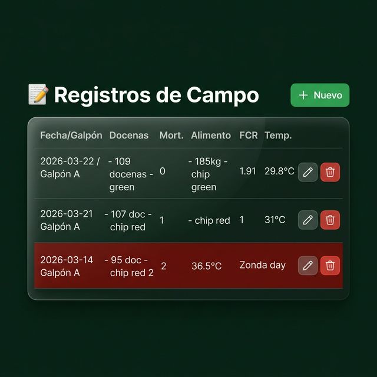
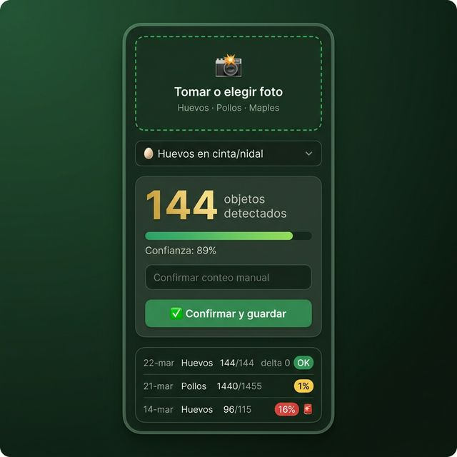
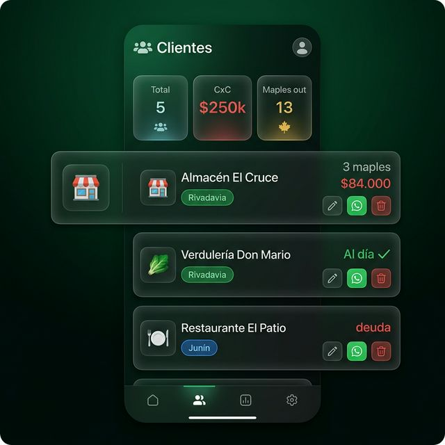
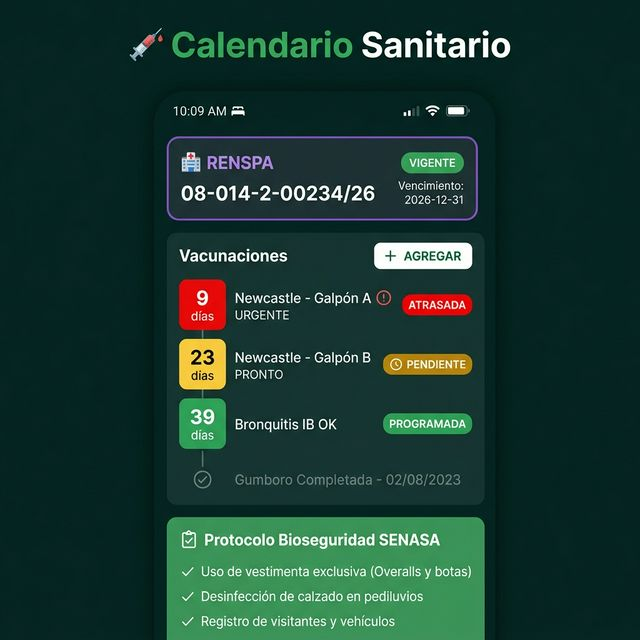
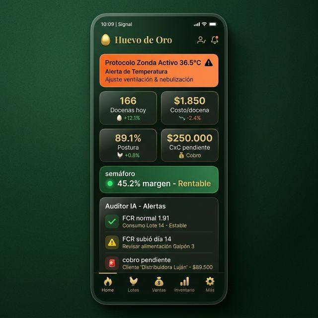

| Perfil | ¿Quién lo usa? | ¿Qué puede hacer? |
|---|---|---|
| Administrador Admin | Padre / dueño del establecimiento | Acceso total: reportes, costos, precios, cobranzas, configuración |
| Operador Operador | Encargado adulto | Registro de campo, ventas, gestión de clientes y pedidos |
| Junior Junior | Hijo adolescente | Solo carga los datos del día: huevos, alimento y mortalidad |
Un formulario de 3 pasos simples, diseñado para usar con una mano y sin equivocarse. En menos de 2 minutos queda registrado el día completo.

Pantalla de Registros Diarios

Pantalla de Conteo por Fotografía IA
El sistema calcula automáticamente el costo real de producir una docena usando los precios actuales de la zona: alimento, flete desde zona núcleo, mano de obra, amortización de aves y gastos operativos.
Gestión completa del ciclo de ventas en Rivadavia, Junín y San Martín:

Pantalla de Clientes y CRM
Al registrar un lote nuevo, el sistema genera automáticamente el calendario de vacunación completo según los protocolos SENASA para la raza indicada.
| Vacuna | Cuándo | Estado |
|---|---|---|
| Marek | Al ingreso (1 día) | Automático |
| Gumboro | Semana 2 y 4 | Automático |
| Newcastle | Sem. 6, 12 y cada 3 meses | Automático |
| Bronquitis IB | Semana 8 y reactivaciones | Automático |
| Coriza | Según zona de riesgo | Manual |

Pantalla Calendario Sanitario
🥚 Producción vs Ventas: huevos que "desaparecen"
🌾 Alimento vs Postura: consumo anormal (FCR elevado)
💳 Ventas vs Cobros: facturas sin cobrar vencidas
📦 Maples: entregados vs devueltos por cliente
📸 Foto IA vs Manual: diferencias superiores al 5%

Panel Ejecutivo del Administrador
- ✔ Genera el calendario de vacunas automáticamente al registrar un lote
- ✔ Detecta caídas de postura fuera de la curva esperada para la semana del lote
- ✔ Alerta cuando a la mortalidad supera el 0,5% diario
- ✔ Recuerda renovar el RENSPA 60 días antes del vencimiento
- ✔ Calcula el costo/docena actualizado con precios reales de la zona núcleo
- ✔ Avisa cuando el precio de venta está por debajo del costo
- ✔ Controla las cuentas por cobrar vencidas
- ✔ Proyecta el resultado mensual en función del ritmo de producción
- ✔ Detecta clientes inactivos (+10 días sin pedido) y sugiere mensajes de reactivación
- ✔ Optimiza la ruta de reparto del día por zona
- ✔ Genera automáticamente mensajes de WhatsApp para cada situación
- ✔ Identifica qué clientes son más rentables y tienen mejor comportamiento de pago
- ✔ Cruza producción vs ventas para detectar huevos "desaparecidos"
- ✔ Verifica el FCR diario y alerta si el consumo de alimento es anormal
- ✔ Controla el stock de maples por cliente automáticamente
- ✔ Registra en log de auditoría quién hizo cada cambio y cuándo